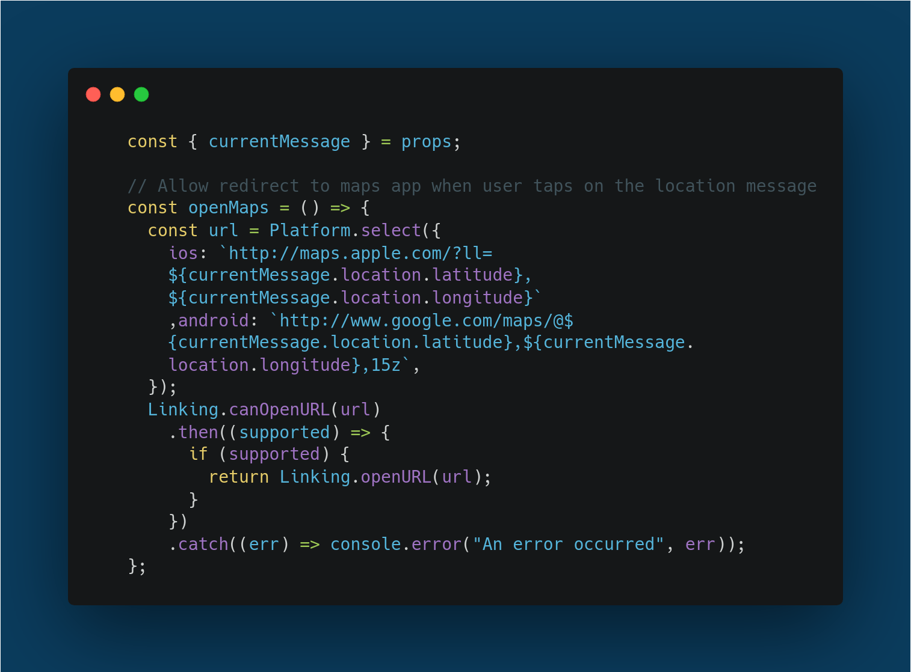

Case Study:
Chat
App
Overview
The Chat App is a mobile application that allows users to engage in real-time conversations, send image and audio messages, and share their current location.
challenge
Create a fully functional chat application for mobile devices, complete with user authentication, real-time data storage, and client-side data retention.
requirements
- Real-time messaging with a robust chat interface
- User authentication and data management
- Accessibility for screen readers
- Offline functionality to access conversations when disconnected
role
Full Stack Developer, with a focus on mobile development.
project scale
Completed in 21 days on a part-time basis. Covered two learning milestones per week, which included:
- Building Native Applications with JavaScript
- Chat UIs & Accessibility
- Real-Time Applications & Data Storage
- Storing Data on the Client Side
- Communication Features
tools used
The Chat App was developed using the following technologies and assets:
- React Native: For cross-platform mobile development
- Expo: To streamline the development process and deploy on mobile
- Firebase: For anonymous user authentication
- Firestore: For a real-time data storage
- Gifted Chat: To integrate the chat interface and functionality
- Design Assets: To meet specific UI guidelines, per CareerFoundry
Approach
I outlined key features and wrote user stories to keep the end user in mind.
features
- User Authentication: Allows users to authenticate anonymously and start chatting.
- Chat Interface: Provides a simple, accessible interface for sending messages.
- Image Sharing: Supports sending images from the gallery or via the camera.
- Location Sharing: Allows users to share location data in a map view.
- Customizable
Chat Screen: Users can set their name and choose a background color. - Offline
Functionality: Access previous messages even when offline. - Accessibility: Designed to work with screen readers for visually impaired users.
user stories
 As a user, I want to easily enter a chat room to start talking with friends
and family.
As a user, I want to easily enter a chat room to start talking with friends
and family.
 As a user, I want to send messages to stay updated
with friends and family.
As a user, I want to send messages to stay updated
with friends and family.
 As a user, I want to send images to share my current
activities.
As a user, I want to send images to share my current
activities. As a user, I want to share my location to show where
I am.
As a user, I want to share my location to show where
I am. As a user, I want to read my messages offline for
easy reference.
As a user, I want to read my messages offline for
easy reference. As a visually
As a visually
impaired user, I want the app to be screen reader-compatible for accessibility.
development process
setup
Initialized the React Native project and set up a virtual device to emulate the app. Configured the emulator for testing layouts and styles using React Native's stylesheet.
chat interface
Integrated essential React Native components and utilized the Gifted Chat library, making it accessible and responsive. Configured different keyboard responses based on device types(iOS or Android).
real-time storage
Explored various options for storage solutions, ultimately choosing Cloud Firestore. I created a shopping-list app to learn Firebase for real-time data display and anonymous user authentication.
client-side storage
Implemented client-side data storage using AsyncStorage. Configured the app to detect network status and conditionally render features, allowing offline functionality.
device capabilities
Enabled access to the camera, microphone, and geolocation features; configured storage in Google Cloud. Reviewed ethical and moral concerns regarding digital privacy and added prompts for consent to access.
testing
Tested extensively on emulated and physical devices. Final product was reviewed and approved by my mentor over video call.
Summary
challenges faced
One of the most challenging aspects was implementing a redirect from the shared location messages to the users' native map application. Without this, location data was too vague. Leveraging native iOS and Android maps, I appended coordinate data to redirect links, allowing more precise detail (Figure 1).
Figure 1. Function to Open Native Map Applications.
This required me to learn the different ways coordinates can be appended to the URL. Parsing through Stack Overflow, Google Maps Documentation, and Apple Maps Documentation, I tested different methods until I was able to display a location consistent across both platforms.
what was learned
Building the Chat App allowed me to apply my knowledge of React Native and JavaScript to create a functional, real-time chat application. I gained comprehensive understanding of mobile development and learned to evaluate optimal technologies for differing use cases.
Overall, I'm happy with the outcome. This hands-on experience has solidified my understanding of mobile app development and prepared me to take on more complex projects in the future.